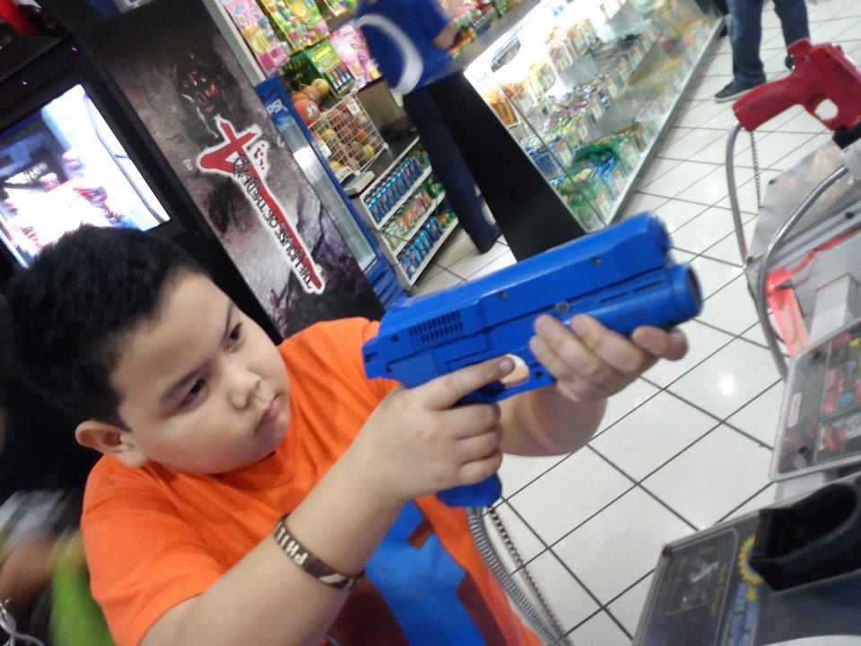
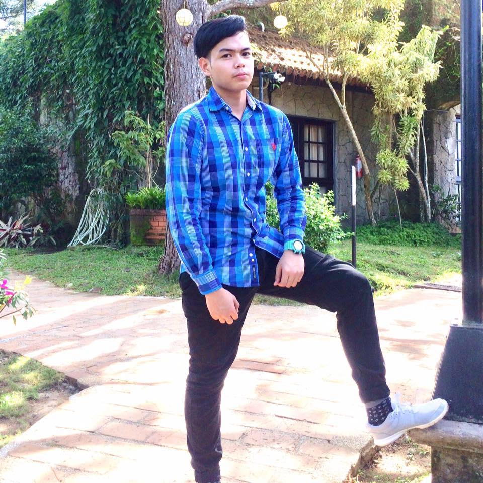
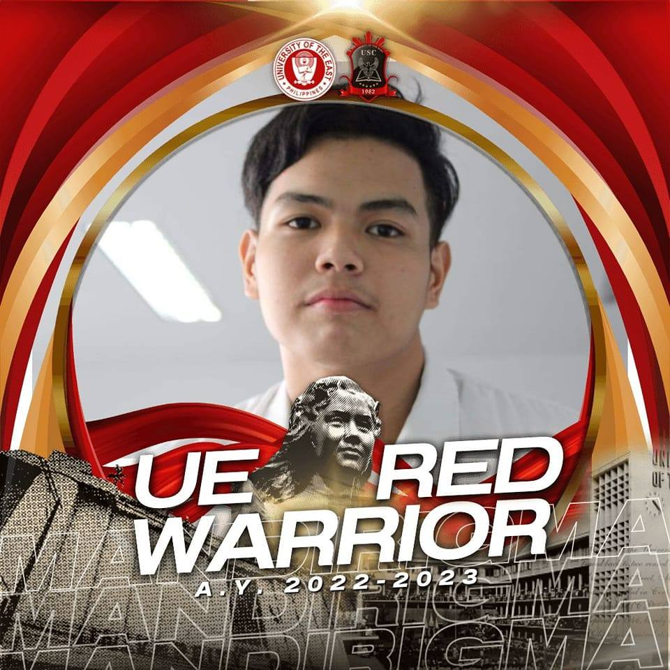

As a child, I entered this world without knowledge of my biological father.1 The mystery of his identity occasionally occupied my thoughts. However, fate had other plans for me.2 I was fortunate to be adopted by my aunt and her husband, who welcomed me into their home when I was just a newborn.3 In their loving care, they became my de facto parents, and I never felt any “difference” between us.4 Growing up alongside their five sons, I was treated as family. Our bonds transcended mere blood relations we were brothers in every sense.5 Our home echoed with laughter, shared secrets, and the comforting rhythm of everyday life.6 Together, we navigated childhood’s adventures, creating memories that would shape our futures.7 My childhood was a delightful blend of playfulness and exploration. Sports played a central role in my life. Basketball, with its fast-paced dribbles and exhilarating shots, became my passion.8 I reveled in the camaraderie of neighborhood games, where victory and defeat were equally sweet.9 Beyond basketball, I immersed myself in traditional Filipino games like “tumbang preso.” The clatter of slippers hitting empty cans, the thrill of evasion, and the joy of knocking down the “preso” (the can) filled our afternoons.10These games connected me to my cultural roots and taught me valuable lessons about teamwork and strategy.11 Kindergarten marked the beginning of my formal education journey. To my surprise, I stood out as the tallest and largest student in my class.12 Yet, physical differences never hindered my kindness toward others. I relished both playtime and learning, cherishing the simple pleasures of childhood.13
My early teenage years ushered in a new chapter—one filled with both excitement and challenges.1 Junior high school became my second home, a place where friendships blossomed, and adolescent dreams took flight.2 The hallways echoed with laughter, whispered secrets, and the shuffle of textbooks.3 High school brought a whirlwind of experiences. I reveled in sports festivals, cheering for my classmates as they sprinted across the track or swung badminton rackets.4 Academics demanded my attention, and I discovered the thrill of unraveling complex equations or dissecting literary masterpieces. Adolescence was an eye-opener.5 Real-life problems tiptoed into my world—the weight of responsibilities, the allure of independence, and the occasional rebellion against rules.6 I yearned for adventure, craving the adrenaline rush that came with pushing boundaries.7 Video games became my refuge during those teenage years. Late nights blurred into dawn as I battled virtual foes, strategized with online friends, and explored fantastical realms.8 The glow of the screen illuminated my room, and the camaraderie forged in digital worlds left an indelible mark on my heart.9 Amidst the pixels and quests, 10I learned valuable lessons: resilience in defeat, cooperation in multiplayer quests, and the art of balancing virtual adventures with real-life responsibilities.11 Friendships blossomed across continents, bridging cultural gaps through shared victories and defeats.12
College, a realm of possibilities and newfound independence. Stepping onto the campus, I felt the weight of commitment and the promise of growth.1 Each lecture hall held the potential to shape my future, and I embraced the challenge with open arms.2 My educational portfolio expanded, and the pursuit of knowledge became my compass.3 The pandemic cast its shadow, forcing us into the uncharted territory of online classes.4 Adjusting to this new normal, I navigated virtual lectures, digital textbooks, and asynchronous discussions.5 Late nights blurred into early mornings as I delved into research papers, collaborated with classmates via video calls, and submitted assignments through digital portals.6 The glow of my laptop illuminated my determination, and I reveled in the intellectual camaraderie that transcended physical boundaries.7 College wasn’t just about academics; it was a holistic experience. Extracurricular clubs beckoned, offering glimpses into passions beyond textbooks.8 Whether it was joining the debate team, volunteering for community projects, or attending late-night poetry readings, I savored every moment.9 The campus buzzed with life—caffeine-fueled conversations at the library, impromptu jam sessions in the courtyard, and the camaraderie of all-night study sessions.10 Amidst the academic rigor, friendships blossomed, and I discovered that learning extended far beyond textbooks.11
 Go To Top